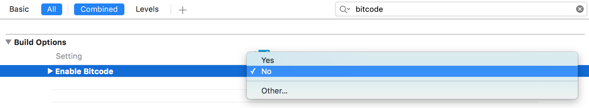

Swift Integration Guide¶
If you follow this guide you can easily use the Gini Vision Library in applications you built with Apple’s Swift programming language.
We assume you have already integrated the Gini Vision Library into your project. If not, take a look at our integration guide.
Bitcode¶
As we rely on OpenCV v2.4.8, which does not support Bitcode, you’ll have to disable Bitcode in every target using the Gini Vision Library. To do so follow these steps:
- Go to your project settings
- Select a target using the Gini Vision Library
- Select ‘Build Settings’
- Set ‘Enable Bitcode’ to NO
Repeat for every target.
Bridging header¶
In order to use the Gini Vision Library in Swift code, you first need to add a bridge header file. A good tutorial how to add a bridge header file can be found on Medium.
Inside the bridging header, you must import the Gini Vision Library by adding the following line:
#import <GiniVision/GiniVision.h>
After that, you can use all classes of the Gini Vision Library inside your Swift code!